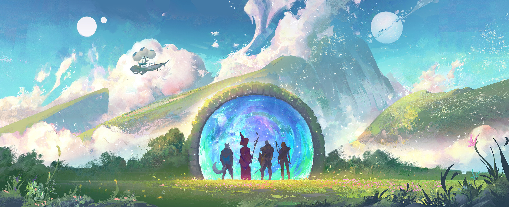
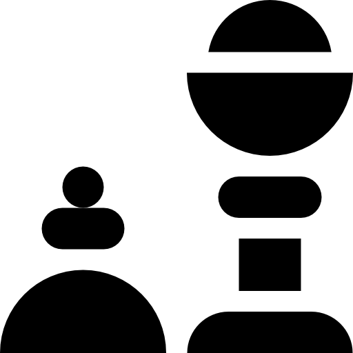

El Santuario de los Heroes y Sabios
En un rincón perdido entre los vientos del destino y las aguas del tiempo, se alza el Jardín de Balamb, una majestuosa institución dedicada a formar a los futuros guardianes del mundo. Más que una escuela, es un refugio para soñadores, un bastión para los valientes y una forja para quienes buscan dominar las artes de la magia y el combate.
El Bastion
En el Bastión, la gente se dedica a actividades esenciales para su formación heroica y mágica. Los Salones de Conjuración son el lugar ideal para aprender hechizos avanzados y perfeccionar habilidades mágicas. En las Reliquias y Forjas, trabajan en la creación y mejora de armas y artefactos mágicos, esenciales para sus aventuras. Los Entrenamientos de Combate ayudan a desarrollar fuerza, estrategia y destreza. Además, las Crónicas del Bastión recopilan historias, enseñanzas y conocimientos que inspiran y guían a los héroes en su camino. Este lugar es un centro de aprendizaje y práctica, donde cada actividad prepara a los aspirantes para enfrentar los desafíos del mundo, combinando sabiduría, magia y valentía.
Más información
Camino Del Heroe
En el Camino del Héroe, cada estudiante comienza como Aspirante, un principiante lleno de curiosidad y deseos de aprender. Los Aspirantes deben dominar las artes básicas de la magia, el combate y la estrategia. Su jornada está marcada por los primeros desafíos, donde ponen a prueba su voluntad y determinación.
A medida que avanzan, los Maestros surgen de entre ellos, aquellos que han superado grandes pruebas y se han ganado el respeto de sus compañeros y maestros. Los Maestros no solo enseñan, sino que guían a los nuevos Aspirantes, compartiendo sabiduría y experiencia. Su poder y conocimiento son fundamentales para mantener el equilibrio en el jardín y garantizar que el legado del héroe siga vivo.
Más información
 Consejo De La Torre
Consejo De La Torre
El Consejo de la Torre es la autoridad suprema que regula el acceso a los secretos más oscuros y poderosos del Jardín de Balamb. Encargado de vigilar el progreso de los estudiantes, supervisa el uso de los conocimientos más antiguos. Las Inscripciones Arcanas son registros secretos accesibles solo para los más valientes. Los Talismanes de Poder son objetos místicos que otorgan habilidades mágicas a quien los lleva. Los Certificados de Héroe se entregan a los que superan las pruebas más difíciles. Los Documentos del Viajero permiten acceder a otros reinos, y la Alianza de Maestros transmite el saber antiguo a las nuevas generaciones.
Más información

Guia De Aventura
En el Jardín de Balamb, aprenderás a dominar el arte de invocar y usar armas mágicas. Las invocaciones son vínculos con poderosos espíritus conocidos como Eones, quienes acudirán a tu llamado en batalla. Para lograrlo, primero debes conectar con la energía mágica que fluye a tu alrededor y comprender sus ritmos.
Por otro lado, las armas mágicas no solo son herramientas, sino extensiones de tu fuerza interior. Aprenderás a forjar y mejorar armas únicas, imbuyéndolas con hechizos poderosos.
Tanto invocaciones como armas requieren entrenamiento constante, concentración y valentía. Este conocimiento será clave para enfrentar los retos que te esperan en tu camino como héroe. ¿Estás listo para el desafío?
Más información
Virtual
En el Jardín de Balamb, la tecnología y la magia se fusionan para ofrecer un acceso virtual único. A través de portales mágicos y cristales encantados, los estudiantes pueden explorar vastos archivos de conocimiento, asistir a clases remotas y conectarse con otros héroes en formación, sin importar la distancia.
El acceso virtual también permite practicar hechizos y estrategias en simulaciones controladas, enfrentando desafíos en mundos digitales que replican situaciones reales. Con herramientas mágicas avanzadas, como grimorios interactivos y varitas de enlace, los estudiantes desarrollan sus habilidades desde cualquier lugar.
Esta combinación de innovación y magia garantiza que el aprendizaje no tenga límites, permitiendo a cada aspirante avanzar en su camino hacia la grandeza.
Más información
Contacto
En el Jardín de Balamb, establecer contacto es más que enviar un mensaje; es crear un vínculo mágico. A través de cristales comunicadores, grimorios conectados y hechizos de correspondencia, los aspirantes y maestros pueden intercambiar ideas, resolver dudas y compartir conocimientos al instante.
El Consejo de la Torre supervisa un sistema de mensajería encantado que asegura que cada comunicación sea segura y llegue a su destino, sin importar la distancia. Además, los portales mágicos permiten reuniones en tiempo real para discutir aprendizajes o planear misiones conjuntas.
Si deseas unirte al Jardín, consulta con los encargados del portal de bienvenida o envía un mensaje sellado con tu intención. ¡Tu aventura empieza con un contacto!
Más información